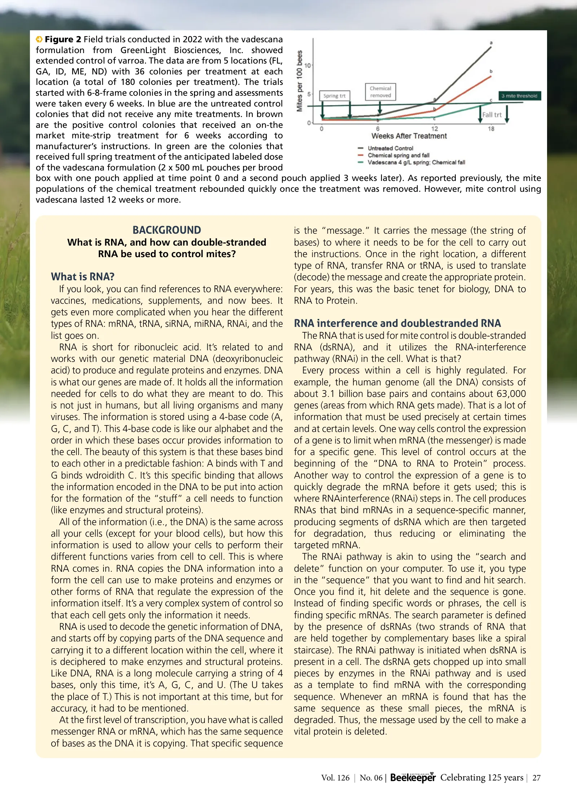

BACKGROUND
What is RNA, and how can double-stranded
RNA be used to control mites?
What is RNA?
If you look, you can find references to RNA everywhere:
vaccines, medications, supplements, and now bees. It
gets even more complicated when you hear the different
types of RNA: mRNA, tRNA, siRNA, miRNA, RNAi, and the
list goes on.
RNA is short for ribonucleic acid. It’s related to and
works with our genetic material DNA (deoxyribonucleic
acid) to produce and regulate proteins and enzymes. DNA
is what our genes are made of. It holds all the information
needed for cells to do what they are meant to do. This
is not just in humans, but all living organisms and many
viruses. The information is stored using a 4-base code (A,
G, C, and T). This 4-base code is like our alphabet and the
order in which these bases occur provides information to
the cell. The beauty of this system is that these bases bind
to each other in a predictable fashion: A binds with T and
G binds wdroidith C. It’s this specific binding that allows
the information encoded in the DNA to be put into action
for the formation of the “stuff” a cell needs to function
(like enzymes and structural proteins).
All of the information (i.e., the DNA) is the same across
all your cells (except for your blood cells), but how this
information is used to allow your cells to perform their
different functions varies from cell to cell. This is where
RNA comes in. RNA copies the DNA information into a
form the cell can use to make proteins and enzymes or
other forms of RNA that regulate the expression of the
information itself. It’s a very complex system of control so
that each cell gets only the information it needs.
RNA is used to decode the genetic information of DNA,
and starts off by copying parts of the DNA sequence and
carrying it to a different location within the cell, where it
is deciphered to make enzymes and structural proteins.
Like DNA, RNA is a long molecule carrying a string of 4
bases, only this time, it’s A, G, C, and U. (The U takes
the place of T.) This is not important at this time, but for
accuracy, it had to be mentioned.
At the first level of transcription, you have what is called
messenger RNA or mRNA, which has the same sequence
of bases as the DNA it is copying. That specific sequence
Figure 2 Field trials conducted in 2022 with the vadescana
formulation from GreenLight Biosciences, Inc. showed
extended control of varroa. The data are from 5 locations (FL,
GA, ID, ME, ND) with 36 colonies per treatment at each
location (a total of 180 colonies per treatment). The trials
started with 6-8-frame colonies in the spring and assessments
were taken every 6 weeks. In blue are the untreated control
colonies that did not receive any mite treatments. In brown
are the positive control colonies that received an on-the
market mite-strip treatment for 6 weeks according to
manufacturer’s instructions. In green are the colonies that
received full spring treatment of the anticipated labeled dose
of the vadescana formulation (2 x 500 mL pouches per brood
box with one pouch applied at time point 0 and a second pouch applied 3 weeks later). As reported previously, the mite
populations of the chemical treatment rebounded quickly once the treatment was removed. However, mite control using
vadescana lasted 12 weeks or more.
is the “message.” It carries the message (the string of
bases) to where it needs to be for the cell to carry out
the instructions. Once in the right location, a different
type of RNA, transfer RNA or tRNA, is used to translate
(decode) the message and create the appropriate protein.
For years, this was the basic tenet for biology, DNA to
RNA to Protein.
RNA interference and doublestranded RNA
The RNA that is used for mite control is double-stranded
RNA (dsRNA), and it utilizes the RNA-interference
pathway (RNAi) in the cell. What is that?
Every process within a cell is highly regulated. For
example, the human genome (all the DNA) consists of
about 3.1 billion base pairs and contains about 63,000
genes (areas from which RNA gets made). That is a lot of
information that must be used precisely at certain times
and at certain levels. One way cells control the expression
of a gene is to limit when mRNA (the messenger) is made
for a specific gene. This level of control occurs at the
beginning of the “DNA to RNA to Protein” process.
Another way to control the expression of a gene is to
quickly degrade the mRNA before it gets used; this is
where RNAinterference (RNAi) steps in. The cell produces
RNAs that bind mRNAs in a sequence-specific manner,
producing segments of dsRNA which are then targeted
for degradation, thus reducing or eliminating the
targeted mRNA.
The RNAi pathway is akin to using the “search and
delete” function on your computer. To use it, you type
in the “sequence” that you want to find and hit search.
Once you find it, hit delete and the sequence is gone.
Instead of finding specific words or phrases, the cell is
finding specific mRNAs. The search parameter is defined
by the presence of dsRNAs (two strands of RNA that
are held together by complementary bases like a spiral
staircase). The RNAi pathway is initiated when dsRNA is
present in a cell. The dsRNA gets chopped up into small
pieces by enzymes in the RNAi pathway and is used
as a template to find mRNA with the corresponding
sequence. Whenever an mRNA is found that has the
same sequence as these small pieces, the mRNA is
degraded. Thus, the message used by the cell to make a
vital protein is deleted.
Vol. 126 | No. 06 |
Celebrating 125 years | 27